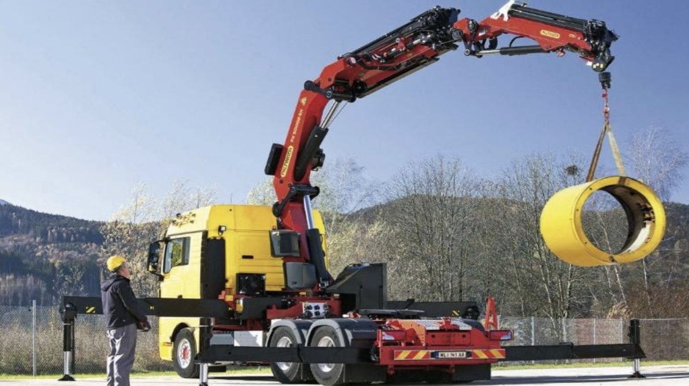
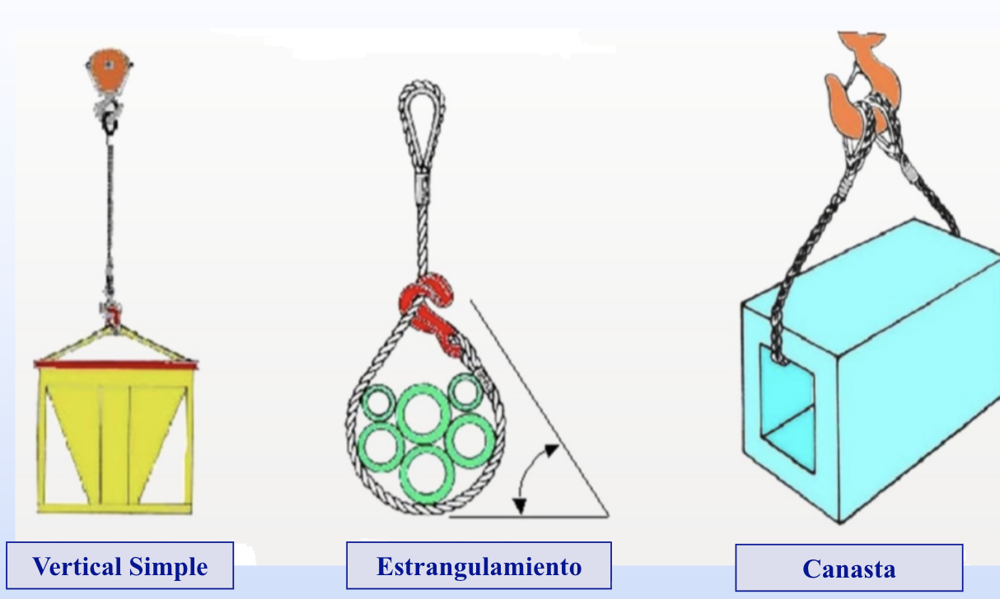
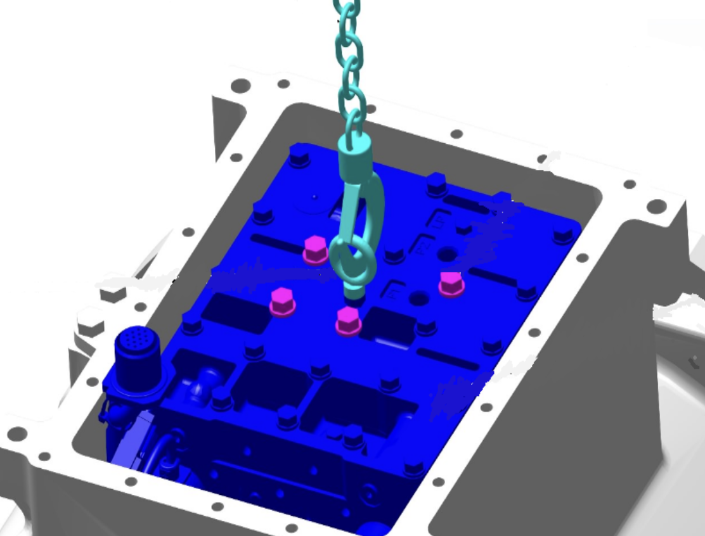
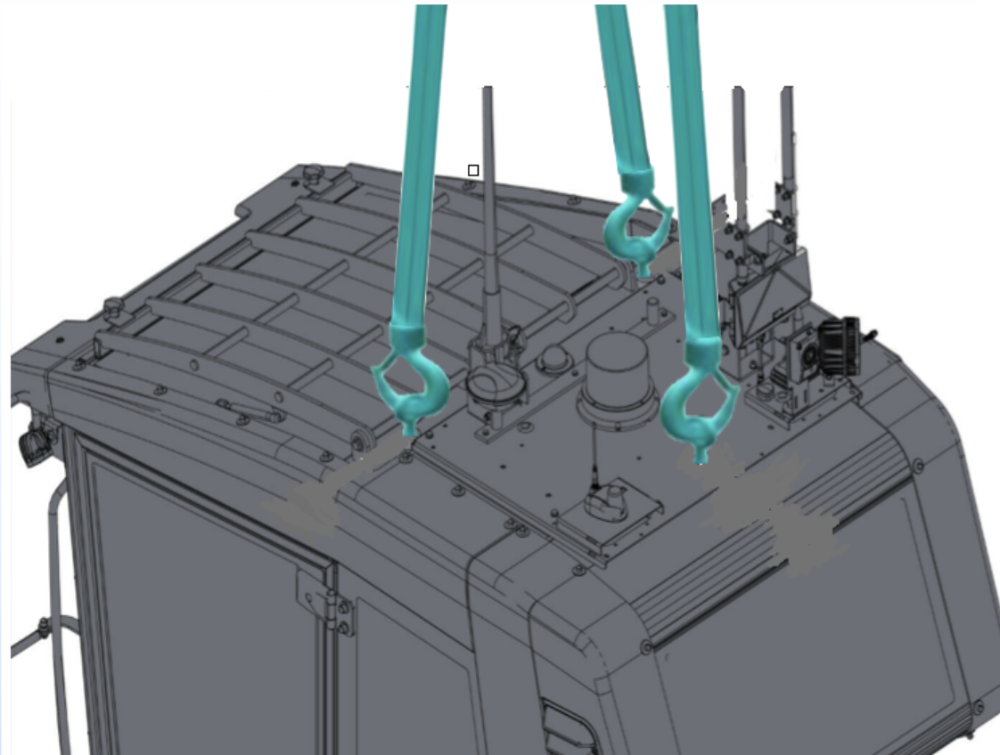
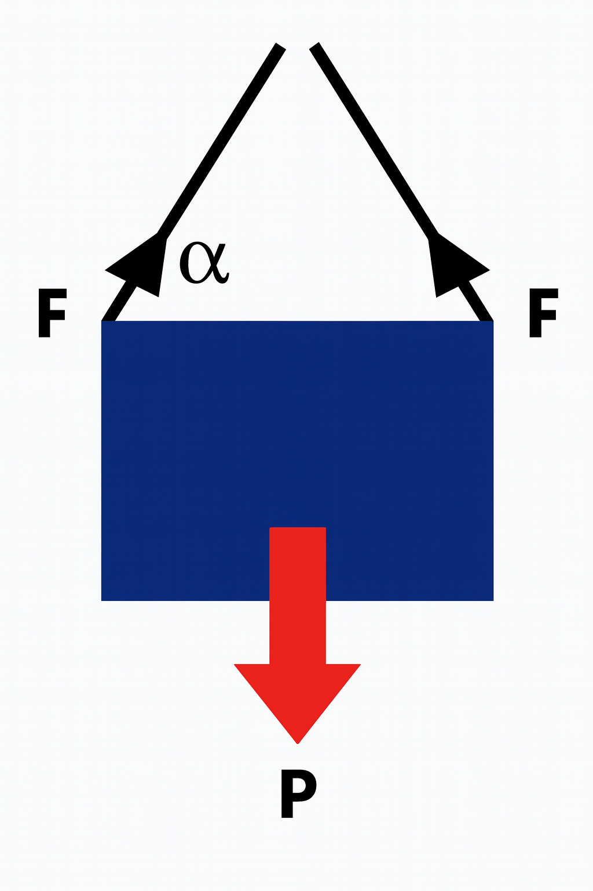
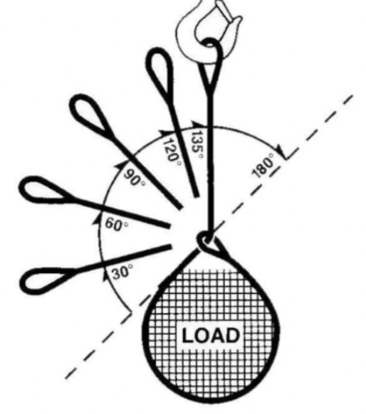
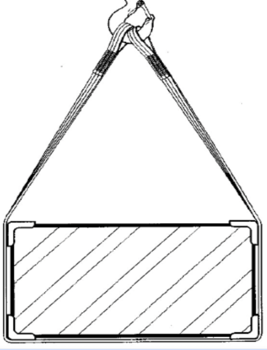

Aparejamiento de Cargas
Importancia y Tipos

Haz clic en cada tarjeta de tipo de aparejamiento para obtener mayor información
¿Porqué se debe Aparejar las Cargas?
- La maniobra de aparejar las cargas, es uno de los principales pasos que se debe realizar antes de levantar las cargas.
- Es necesario preparar los elementos de izaje que se va utilizar y los accesorios que hacen que la maniobra sea los mas segura posible.
- Considerar el centro de gravedad, el peso y la forma del componentes es la información que debe ser precisa para toda maniobra de izaje.
- La comunicación entre el operador de la grúa y el rigger o maniobrista deben ser estándar para ambos


Formas de Sujeción de Cargas
Tipos básicos de sujeción

Sujeción Vertical Simple
Una eslinga vertical

Sujeción Vertical Múltiple
Múltiples eslingas verticales

Disminución del Factor de Carga
Reducción de capacidad

Sujeción de Tipo Estrangulamiento
Método de lazo

Sujeción de Tipo Canasta
Configuración de canasta